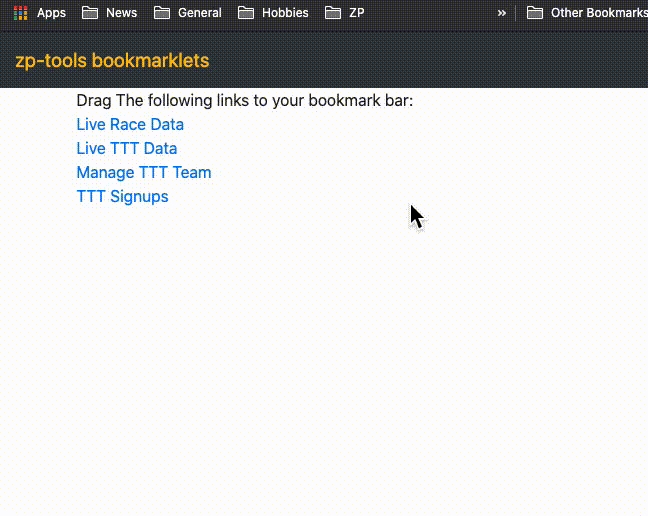

zp-tools bookmarklets
Drag The following links to your bookmark bar:
Live Race Data
Live TTT Data
Manage TTT Team
TTT Signups
Live Race Data (dev)
Live TTT Data (dev)
Manage TTT Team (dev)
TTT Signups (dev)
Here is an example of adding the TTT bookmarklet to the bookmark bar. You need to be on a TTT event page for it to work.
